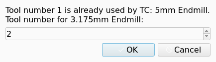

Tool Library
Overview
A Tool Library is a list of Tool Bits that the CAM workbench stores on the disk. A Tool Library is independent of a Job, and each document can use it. A Tool Library can represent a physical group of Tool Bits, for example the Tool Bits in an automatic tool changer. A Tool Library can also contain the Tool Bits for one purpose, for example all Tool Bits that cut plastic.
A Tool Library is a JSON file with the extension .fctl in the Tools/Library folder of the asset directory.
The file gives a number to each Tool Bit ID.
The Tool Bit files are in the Tools/Bit folder of the asset directory.
Thus one Tool Bit can be a member of more than one Tool Library.
Tools gives the relation between Tool Bit, Tool Library and Tool Controller.
FreeCAD supplies one Tool Library with the label Default.
The Default Tool Library contains 13 Tool Bits with these Tool Shapes:
-
Endmill: one Tool Bit of 3.175 mm and one Tool Bit of 5 mm -
Drill: one Tool Bit of 5 mm -
Ballend: one Tool Bit of 6 mm -
Bullnose: one Tool Bit of 6 mm -
VBit: four Tool Bits, of 30, 45, 60 and 90 degrees -
Chamfer: one Tool Bit of 45 degrees -
SlittingSaw: one Tool Bit -
Probe: one Tool Bit -
ThreadMill: one Tool Bit of 5 mm
The CAM workbench copies the Default Tool Library into the asset directory when you open the Library Manager dialog or the Toolbit Selector dialog for the first time.
Tool numbers
A Tool Bit has a permanent ID, which is the file name of the Tool Bit. The Tool Bit ID property shows this ID. The number of a Tool Bit is a property of the Tool Library. Thus the same Tool Bit can have different numbers in different Tool Libraries.
The number of a Tool Bit is unique in one Tool Library. When you give a Tool Bit a number that a different Tool Bit has, that Tool Bit moves to the next free number.
A Job has its own numbers. The Tool Number property of each Tool Controller (TC) holds the number that the Job uses. When you add a Tool Bit to a Job, the number in the Tool Library is only the proposal for Tool Number.
introduced in 26.3: The CAM workbench sets Tool Number of the new TC as follows:
-
No TC of the Job has the library number: the new TC gets the library number.
-
A TC of the same Tool Bit has the library number: the new TC gets the library number.
-
A TC of a different Tool Bit has the library number: the Tool Number dialog asks you for a different number.
-
The Tool Bit has no library number: the new TC gets a number that is free in the Job.
You can change Tool Number after the CAM workbench creates the TC. Two TCs of a Job can have the same number only when they use the same Tool Bit. See Tool Controller.
Add Tool Bits to a Job
The Toolbit Selector dialog shows the Tool Bits of a Tool Library and adds the selected Tool Bits to a Job. The Toolbit Dock command opens the dialog. introduced in 26.3: The Job editor and the Tool Controller selection of an Operation open the same dialog.
The library list of the dialog contains each Tool Library in the asset directory. introduced in 26.3: The first entry of the library list is All Tools. The All Tools entry shows each Tool Bit in the asset directory, also a Tool Bit that is in no Tool Library.
A Tool Bit in the All Tools view has no number, because a Tool Library gives the number. The dialog hides the sort control in the All Tools view and sorts the list by label. The All Tools view does not change the sort sequence that the CAM workbench stores for a Tool Library. The figure shows the dialog with the All Tools entry selected.

For each selected Tool Bit, the dialog does these steps:
-
The dialog finds the number for the TC. See Tool numbers.
-
The dialog adds the Tool Bit object to the document. The Tool Bit object is hidden.
-
The dialog creates a TC with the label
TC:and the label of the Tool Bit. -
The dialog adds the TC to the Job.
introduced in 26.3: The Tool Number dialog opens in these two conditions:
-
A TC of a different Tool Bit has the library number. The dialog shows the text
Tool number <number> is already used by <label>.with the number and the label of that TC. -
The Tool Bit has no library number, and the Toolbit Dock command opened the Toolbit Selector dialog. The dialog shows the text
Tool number for <label>:with the label of the Tool Bit.
The figure shows the Tool Number dialog for the first condition.

The default value of the Tool Number dialog is the next free number of the Job. The minimum value is 1. If you enter a number that a TC of a different Tool Bit has, the Tool Number dialog opens again. If you cancel the Tool Number dialog, the CAM workbench does not add this Tool Bit to the Job. If no Tool Bit was added, the Toolbit Selector dialog stays open.
Open Library Editor opens the Library Manager dialog. See Toolbit Library Manager. See Tool Bit for the Toolbit Parameter Editor dialog that changes one Tool Bit.
Tool Library management
The Library Manager dialog creates, changes and arranges each Tool Library. opens the dialog. Toolbit Library Manager describes the controls of the dialog.
These facts apply to the Tool Library commands of the Library Manager:
-
Adds a new library opens the Library Properties dialog, which asks for the name of the Tool Library.
-
F2 in the library list has the same function as Renames the library.
-
Del in the library list has the same function as Removes the library. The Tool Bit files of the removed Tool Library stay on the disk.
-
Imports a library reads a
.fctlfile or a Camotics.jsonfile. The import also reads the Tool Bits from theBitfolder adjacent to the file when the asset directory does not contain them. -
Imports a toolbit reads a
.fctbfile or a YAML file.
The All Toolbits entry of the Library Manager lists each Tool Bit in the asset directory.
The CAM workbench keeps the last selected Tool Library and the last sort sequence between sessions.
The parameters LastToolLibrary and LastToolLibrarySortKey in Preferences/Mod/CAM/Tools hold these two values.
A change of the asset directory clears the stored Tool Library.
File format
A Tool Library file is a JSON file with the extension .fctl.
{
"label": "Default",
"tools": [
{
"nr": 1,
"path": "3.175mm_Endmill.fctb"
},
{
"nr": 2,
"path": "5mm_Endmill.fctb"
}
],
"version": 1
}The keys are:
-
label: the name that the interface shows. If the key is absent, the CAM workbench uses the file name. -
tools: the list of the Tool Bits. -
nr: the number of the Tool Bit in this Tool Library. -
path: the ID of a Tool Bit in theTools/Bitfolder. -
version: the version of the file format.
Export formats
Exports the library in the Library Manager writes the selected Tool Library in one of these formats:
-
FreeCAD Tool Library (
.fctl) -
Camotics tool table (
.json) -
introduced in 1.1 LinuxCNC Tool Table (
.tbl)
Camotics tool table
The Camotics file has one entry for each Tool Bit. The key of the entry is the number of the Tool Bit. The export writes these keys in each entry:
-
units: the unit system of the entry. Values:metric,imperial. -
diameter: the diameter of the Tool Bit, in mm formetricand in inch forimperial. -
length: the length of the Tool Bit, in the same unit asdiameter. -
description: the label of the Tool Bit. -
shape: the Camotics name of the shape. The value isCylindricalfor a Tool Shape that has no Camotics equivalent.
introduced in 26.3: The active unit schema of FreeCAD selects the unit system of each entry.
When the unit schema shows the diameter of the Tool Bit in an imperial unit, the export writes inch and the units value imperial.
In all other conditions, the export writes mm and the units value metric.
introduced in 26.3: The export rounds diameter and length to the number of decimals that sets.
introduced in 26.3: The import reads diameter and length in the unit that the units key of the entry names.
See Toolbit Library Manager.